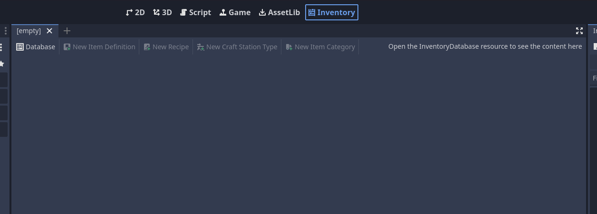

Inventory Database Editor
TODO show editor sections
To work with the inventory database, it is advisable to work with the editor integrated by the plugin, which is accessed through the tab at the top of the screen called “Inventory”.
When opened, it is necessary to create or open a resource InventoryDatabase to show other options such as creating resources such as items, item categories, recipes and craft stations.
Each tab shows a type of resource that is added to the database and its resource editor.